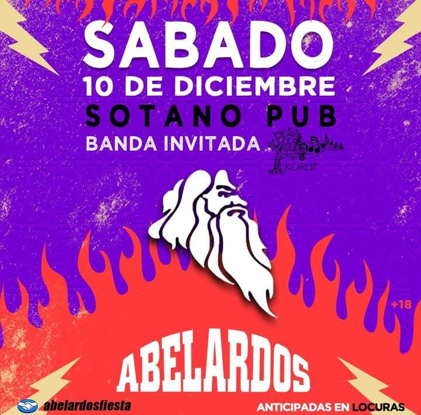
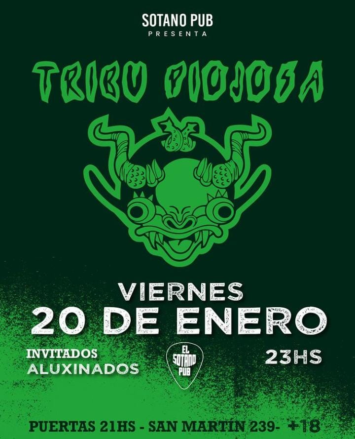
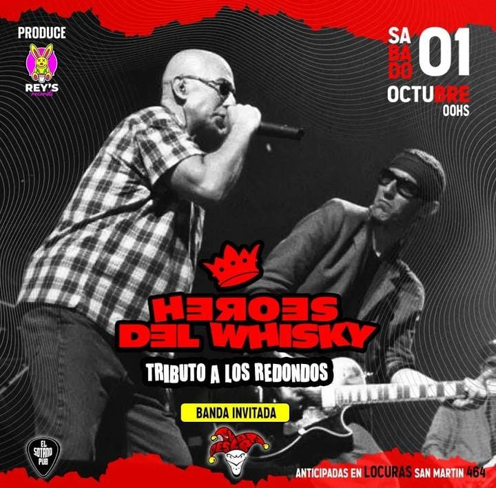
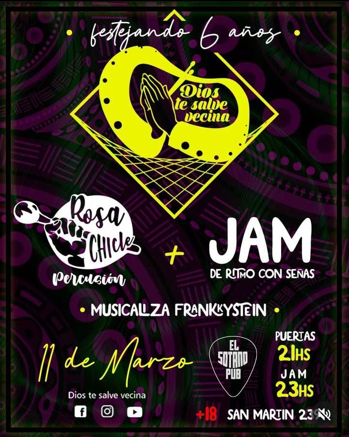
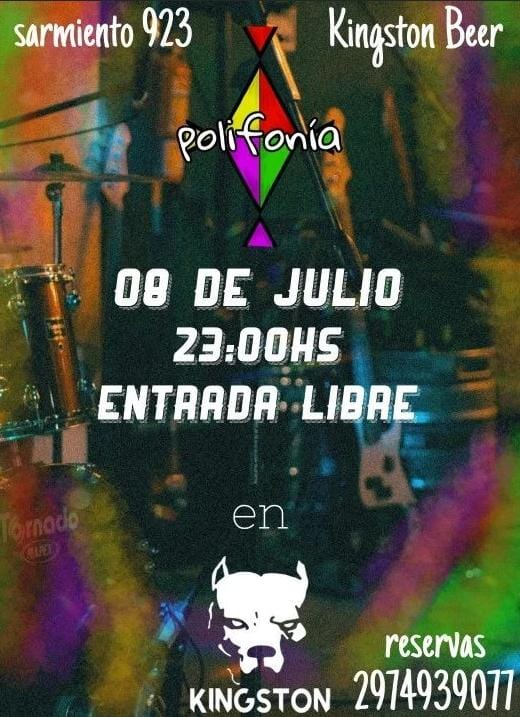

¡BIENVENIDOS!
¡Te invitamos a que escuches nuestra lista de reproducción!
BANDAS LOCALES
Comodoro Rivadavia, una ciudad situada en la Patagonia argentina ha dado origen a diversas agrupaciones talentosas. A continuación, le presentamos cinco de estas notables bandas locales que cautivan a audiencias con su singular propuesta artística y su pasión por la música.
PRÓXIMAS FECHAS
¿Querés saber cuando y en que lugar se presentan las bandas? En esta sección lo vas a descubrir.
     VER MÁS